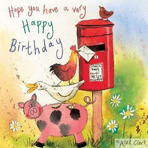

Numeração nas legendas
Neste exemplo, a numeração das imagens são automáticas assim como as referencias.
Na imagem Img a a alterar temos uma imagem muito boa sobre o feliz aniversário.

Happy Birthday

Be happy
Na imagem texto a a alterar temos a imagem muito boa sobre o feliz.